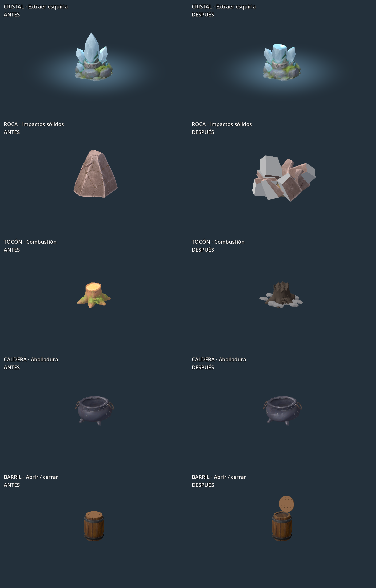

25/11/2026 · Assets y editables · Lámina de estados
El cristal agotado y los tocones quemados se conectan a los actores existentes. Las rocas destructibles, calderas y barriles con tapa quedan disponibles como piezas de mapa y se ejercitan en un laboratorio. No se han añadido colocaciones nuevas a los niveles existentes.
| Objeto | Disparador y resultado | Al recargar |
|---|---|---|
| Cristal resonante | Al entregar la esquirla sustituye el modelo por el cristal truncado. Conserva pulsos, enfriamiento, brillo, carga, colisión y cupo de luz. | La flag mineral existente restaura directamente la geometría agotada. |
| Tocón | Al consumirse deja tocón carbonizado y ceniza, sin obstáculos nuevos. La señal de consumo sigue liberando el paso. La madera restante añade ceniza a sus restos transitorios. | Clave estable por escena, modelo y posición. Conserva carbonización parcial si se apaga; vuelve sin fuego y puede reprenderse. Consumido: restaura restos sin combustible ni bloqueo. |
| Roca destructible | Variante de muro con modelo=roca_est_1. El daño intermedio cambia a grietas geométricas; la rotura dispersa ocho piezas con interiores y libera la casilla. | Recupera daño intermedio o fragmentos asentados con la misma pose. No sustituye los muros de sillares ni las rocas empujables. |
| Caldera | Un sólido denso o una explosión deja abolladura permanente. Fuego calienta; agua/hielo enfrían. Cambiar el modelo conserva el calor actual y los materiales térmicos son propios. | Restaura la abolladura; el calor es un estado temporal. |
| Barril con tapa | Tipo barril_almacen: E abre/cierra al acercarse, con rótulo y bisagra animada. Entre barriles responde el más cercano. No entrega botín ni abre un inventario. | Restaura la tapa abierta o cerrada. El barril explosivo conserva su actor, mecha y explosión. |
; pieza piedra muro 10 8 modelo=roca_est_1 golpes=2 ; pieza olla caldera 12 8 giro=90 ; pieza almacen barril_almacen 14 8 giro=0 ; puzle abrir cuando=boton.pulsado hace=almacen.abrir ; puzle cerrar cuando=otro.pulsado hace=almacen.cerrar ; puzle dano cuando=almacen.abierto hace=olla.abollar
Los tres generan claves de guardado por nivel e id; admiten flag=nivel.sala.nombre para fijarla. La caldera ofrece acciones abollar y poner_calor(0..1), condición abollada|entera y evento abollada. El barril ofrece abrir|cerrar, condiciones y eventos abierto|cerrado. La roca conserva el contrato de muro.
Abrir LabEstadosBlender.tscn: flechas cambian de objeto, Espacio actúa y R reinicia la muestra. La roca necesita dos impactos; el tocón arde durante su reloj real. El laboratorio reinicia Estado y Flags en memoria y no guarda partida.
288 comprobaciones sin fallos: conexión (31), puzles (128), combustión (26), feedback (24), materiales de cueva (55) y fuego sobre los tocones reales de Bosque02 (24). La prueba herramientas/prueba_conexion_blender.gd verifica extracción, geometría, luces, pulso, daño intermedio, rotura y poses persistentes, emisión térmica, tapa, entrada de interacción cerca/lejos, cierre, consumo del tocón y restauración desde la fábrica del nivel, montaje desde texto y señal de puzle. Los logs están en output/blender_interacciones_2026-11-25/conexion*.
Las diez capturas proceden de los actores, no de una simulación del material. Se conservan avisos del entorno user:// y del servidor gráfico al cerrar; los fallos de comprobaciones y errores de script se revisan aparte.
